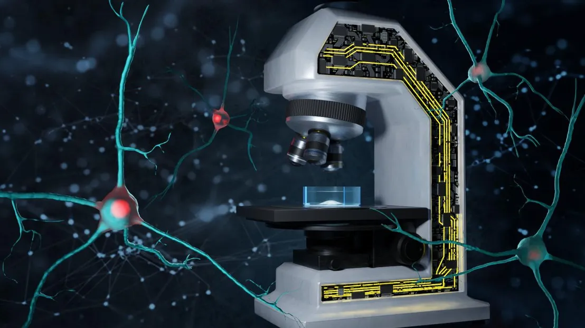

Smart microscope captures aggregation of misfolded proteins
The accumulation of misfolded proteins in the brain is central to the progression of neurodegenerative diseases like Huntington's, Alzheimer's and Parkinson's. But to the human eye, proteins that are destined to form harmful aggregates don't look any different than normal proteins. The formation of such aggregates also tends to happen randomly and relatively rapidly - on the scale of minutes. The ability to identify and characterize protein aggregates is essential for understanding and fighting neurodegenerative diseases.
Now, using deep learning, EPFL researchers have developed a 'self-driving' imaging system that leverages multiple microscopy methods to track and analyze protein aggregation in real time – and even anticipate it before it begins. In addition to maximizing imaging efficiency, the approach minimizes the use of fluorescent labels, which can alter the biophysical properties of cell samples and impede accurate analysis.
"This is the first time we have been able to accurately foresee the formation of these protein aggregates,” says recent EPFL PhD graduate Khalid Ibrahim. "Because their biomechanical properties are linked to diseases and the disruption of cellular function, understanding how these properties evolve throughout the aggregation process will lead to fundamental understanding essential for developing solutions.”
Ibrahim has published this work in Nature Communications with Aleksandra Radenovic, head of the Laboratory of Nanoscale Biology in the School of Engineering, and Hilal Lashuel in the School of Life Sciences, in collaboration with Carlo Bevilacqua and Robert Prevedel at the European Molecular Biology Laboratory in Heidelberg, Germany. The project is the result of a longstanding collaboration between the Lashuel and Radenovic labs that unites complementary expertise in neurodegeneration and advanced live-cell imaging technologies. "This project was born out of a motivation to build methods that reveal new biophysical insights, and it is exciting to see how this vision has now borne fruit,” Radenovic says.
Witnessing the birth of a protein aggregate
In their first collaborative effort, led by Ibrahim, the team developed a deep learning algorithm that was able to detect mature protein aggregates when presented with unlabeled images of living cells. The new study builds on that work with an image classification version of the algorithm that analyzes such images in real time: when this algorithm detects a mature protein aggregate, it triggers a Brillouin microscope, which analyzes scattered light to characterize the aggregates' biomechanical properties like elasticity.
Normally, the slow imaging speed of a Brillouin microscope would make it a poor choice for studying rapidly evolving protein aggregates. But thanks to the EPFL team's AI-driven approach, the Brillouin microscope is only switched on when a protein aggregate is detected, speeding up the entire process while opening new avenues in smart microscopy.
"This is the first publication that shows the impressive potential for self-driving systems to incorporate label-free microscopy methods, which should allow more biologists to adopt rapidly evolving smart microscopy techniques,” Ibrahim says.
Because the image classification algorithm only targets mature protein aggregates, the researchers still needed to go further if they wanted to catch aggregate formation in the act. For this, they developed a second deep learning algorithm and trained it on fluorescently labelled images of proteins in living cells. This 'aggregation-onset' detection algorithm can differentiate between near-identical images to correctly identify when aggregation will occur with 91% accuracy. Once this onset is spotted, the self-driving system again switches on Brillouin imaging to provide a never-before-seen window into protein aggregation. For the first time, the biomechanics of this process can be captured dynamically as it occurs.
Lashuel emphasizes that in addition to advancing smart microscopy, this work has important implications for drug discovery and precision medicine. "Label-free imaging approaches create entirely new ways to study and target small protein aggregates called toxic oligomers, which are thought to play central causative roles in neurodegeneration,” he says. "We are excited to build on these achievements and pave the way for drug development platforms that will accelerate more effective therapies for neurodegenerative diseases.”